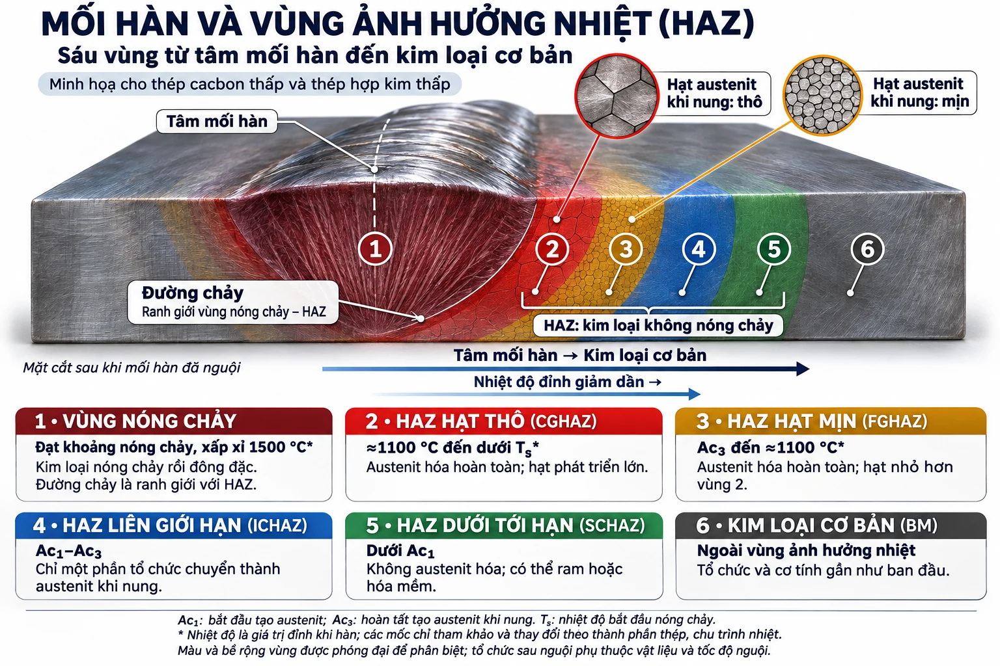
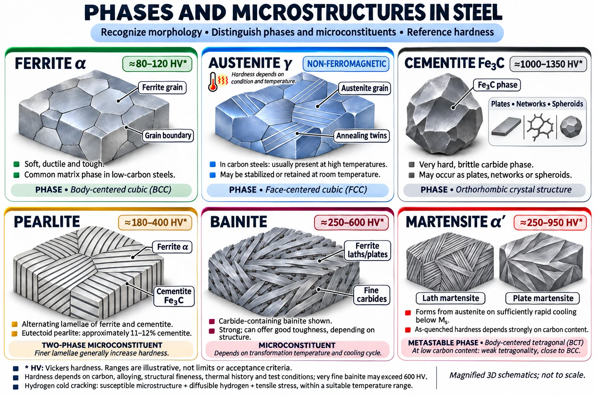
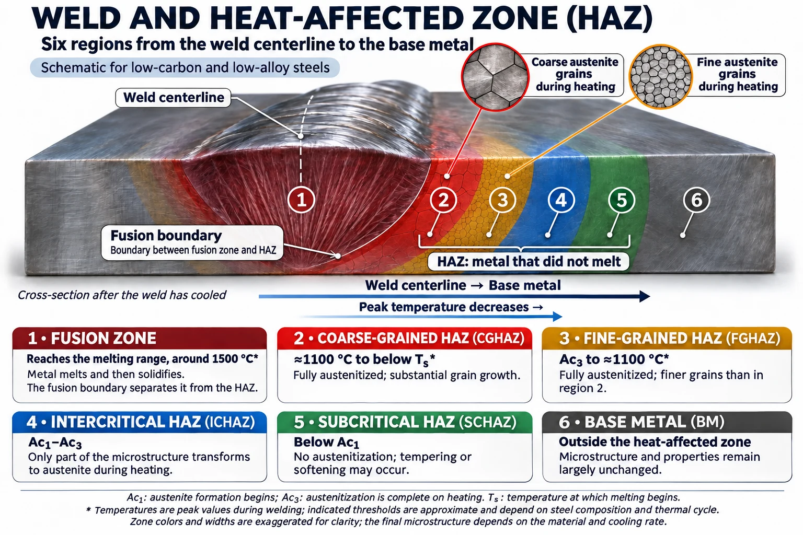

Cắt ngang một mối hàn, mài bóng và nhỏ axit lên, bạn sẽ thấy một dải màu khác nhau chạy dọc theo đường chảy. Thép ở đó cứng hơn thép nền, đôi khi cứng đến mức nứt. Cùng một tấm thép, chỉ cách vài milimét, mà tính chất khác hẳn. Để hiểu vì sao, ta phải nhìn vào bên trong thép, ở những cỡ mà mắt thường không thấy.
Bốn cỡ nhìn một tấm thép
Những việc QC làm hằng ngày nằm ở cỡ cấu kiện và mặt cắt macro: đo, nhìn bằng mắt, soi mối hàn. Nhưng nguyên nhân của mọi hiện tượng lại nằm sâu hơn, ở tổ chức tế vi quan sát được ở độ phóng đại 100 đến 500 lần, và ở mạng tinh thể.
Mạng tinh thể và lý do thép nhiệt luyện được
Nguyên tử sắt xếp thành mạng đều đặn, với hai kiểu mạng chính. Mạng BCC (lập phương tâm khối) có các lỗ hổng nhỏ; ferit α hoà tan tối đa khoảng 0,022% carbon (ở 727 °C). Mactenxit chứa carbon có mạng BCT, tức BCC bị kéo dãn theo một trục do carbon bị “nhốt” lại. Mạng FCC (lập phương tâm mặt) có lỗ hổng lớn hơn và hoà tan được tới 2,14% carbon: đó là austenit.
Điều kỳ diệu là sắt tự đổi kiểu mạng theo nhiệt độ, từ BCC sang FCC ở 912 °C. Khi nung lên FCC, thép hoà tan nhiều carbon; khi nguội, carbon bị “nhốt lại” hay tách ra tuỳ theo tốc độ nguội. Đó chính là điều kiện để nhiệt luyện. Nhôm và đồng không có chuyển biến thù hình này nên không tôi tạo mactenxit như thép carbon (một số hợp kim của chúng vẫn hoá bền được bằng nhiệt luyện tiết pha).
Hạt tinh thể: nhỏ hơn thì vừa bền vừa dai
Thép gồm vô số hạt tinh thể nhỏ, ngăn cách bởi biên hạt. Kích thước hạt được ghi bằng cấp hạt G theo ASTM E112 hoặc ISO 643, và G càng lớn thì hạt càng mịn. Biên hạt chặn các lệch đang trượt, nên hạt mịn làm thép bền hơn theo quan hệ Hall–Petch, đồng thời dai hơn. G = 6 là mức tối thiểu của thép hạt mịn theo EN 10025-3.
| G | Hạt TB | Đánh giá |
|---|---|---|
| 3 | 0,125 mm | Thô |
| 6 | 0,044 mm | Mịn, tối thiểu EN 10025-3 |
| 9 | 0,016 mm | Rất mịn |
Bốn cách làm thép bền hơn, và chỉ một cách không làm mất độ dai
Thép biến dạng dẻo nhờ các lệch trượt trong mạng, giống như dịch một tấm thảm nặng bằng cách đẩy một nếp gấp đi thay vì kéo cả tấm. Vì thế mọi cách làm thép bền hơn đều là cách cản trở lệch. Có bốn cách: hoà tan nguyên tử lạ vào mạng, làm mịn hạt, tạo các hạt tiết pha cực nhỏ, và biến dạng nguội. Dung dịch rắn, tiết pha và biến dạng nguội tăng bền nhưng thường ít nhiều làm giảm độ dai (mức độ tuỳ thành phần và kích thước hạt tiết pha); chỉ làm mịn hạt là vừa tăng bền vừa tăng dai. Đó là lý do kỹ thuật khiến thép +N và +M đắt hơn +AR.
Khi cần nhìn trực tiếp, người ta soi tổ chức tế vi theo ASTM E3 và E407 (chuẩn bị mẫu và tẩm thực), E112 (cấp hạt) và ISO 17639 (macro, micro mối hàn). Với QC hàn, thao tác quan trọng nhất là mẫu macro kèm đo độ cứng khi chấp nhận quy trình hàn theo ISO 15614-1.
Giản đồ pha Fe–Fe₃C: tấm bản đồ gốc của mọi loại thép
Giản đồ pha cho biết thép có tổ chức gì ở mỗi nhiệt độ và hàm lượng carbon, khi nung hoặc làm nguội đủ chậm. Từ đó xác định được nhiệt độ thường hóa, tôi, ram, ủ, biết trần nhiệt độ cho khử ứng suất và nắn nhiệt, và giải thích vì sao vùng ảnh hưởng nhiệt chia thành nhiều vùng. Thép kết cấu chỉ nằm trong dải rất hẹp, 0,05 đến 0,30% carbon ở góc trái giản đồ; phần bên phải là gang và thép dụng cụ, không dùng cho kết cấu hàn.
Hãy theo dõi S355 nguội chậm. Với 0,18% C, thép đông đặc qua ferit δ, phản ứng bao tinh ở khoảng 1495 °C rồi trở thành austenit hoàn toàn, và giữ nguyên austenit khi hạ nhiệt. Khi chạm đường A₃, ferit bắt đầu tách ra ở biên hạt và carbon dồn vào phần austenit còn lại, tăng dần đến 0,77%. Tại A₁ (727 °C trên giản đồ nhị nguyên) phần austenit đó chuyển hẳn thành peclit.
Sáu tổ chức của thép
Ferit mềm, dẻo, dai. Trong thép carbon kết cấu, austenit chỉ ổn định ở nhiệt độ cao (thép không gỉ austenit và austenit dư sau nhiệt luyện là ngoại lệ). Xêmentit Fe₃C cực cứng và giòn. Peclit là những lớp ferit và xêmentit xen kẽ, cứng và bền hơn ferit. Bốn tổ chức này đọc được trên giản đồ pha. Hai tổ chức còn lại, bainit và mactenxit, hình thành khi nguội nhanh và đọc trên giản đồ CCT (bainit còn có thể hình thành khi giữ đẳng nhiệt, đọc trên giản đồ TTT); mactenxit cứng và giòn là một trong ba yếu tố gây nứt nguội, cùng với hydro khuếch tán và ứng suất kéo.
Quy tắc đòn bẩy: S355 gồm bao nhiêu ferit và peclit
Từ giản đồ ta tính được tỷ lệ các pha. Theo mô hình Fe–C cân bằng, thép 0,18% carbon nguội rất chậm có khoảng 79% ferit và 21% peclit; tổ chức thực tế của từng lô S355 còn phụ thuộc thành phần và tốc độ nguội.
% peclit = 100 − 78,9 = 21,1 %
Ferit chiếm gần 80% giải thích vì sao S355 rất dẻo (độ giãn dài ≥ 22%) và dễ uốn nguội. Peclit chỉ khoảng 21% nhưng đóng góp đáng kể vào cường độ; ferit và peclit cùng chịu tải. Tăng carbon là tăng peclit: bền hơn nhưng giòn hơn, CEV cao hơn, khó hàn hơn. Đó là lý do các tiêu chuẩn thép kết cấu hàn khống chế carbon ở mức 0,20 đến 0,23% chứ không cao hơn.
Từ giản đồ nhị nguyên đến thép thật: A₁ và A₃ của S355
Giản đồ Fe–Fe₃C chỉ có sắt và carbon. Thép thật còn có mangan, silic, nhôm, và mỗi nguyên tố đều dịch đường chuyển biến. Với S355 chứa 1,45% mangan, A₃ thực tế thấp hơn giản đồ nhị nguyên hơn 40 °C. Công thức Andrews rút gọn (bỏ qua Ni, Cr, Mo, V, Cu…) cho kết quả Ac3 = 910 − 203√C + 44,7Si − 30Mn + 400Al ≈ 808 °C và Ac1 = 723 − 10,7Mn + 29,1Si ≈ 718 °C, với C = 0,18%, Mn = 1,45% và giả định Si ≈ 0,36%, Al ≈ 0,03%. Đây là giá trị ước tính cho một thành phần cụ thể, không phải nhiệt độ chuyển biến đo được và không áp dụng chung cho mọi S355.
Ac1 là trần luyện kim cho ram, khử ứng suất và nắn nhiệt: vượt qua nó là thép bắt đầu chuyển pha trở lại. Giới hạn cho phép trong chế tạo thấp hơn và do tiêu chuẩn sản phẩm, hướng dẫn nhà sản xuất thép và quy trình được phê duyệt quyết định: EN 10025-3 khuyến nghị khử ứng suất tấm không quá 560 °C; EN 10025-4 cảnh báo khử ứng suất trên 580 °C hoặc quá 1 giờ; EN 1090-2:2018 (6.5.3) yêu cầu nắn nhiệt thép trên S355 phải có quy trình bằng văn bản, nêu nhiệt độ tối đa và cách làm nguội, được thẩm định bằng thử kéo, va đập và độ cứng. Nhiệt độ thường hóa bằng Ac3 cộng 30 đến 80 °C, tức khoảng 840 đến 890 °C theo công thức; trong thực tế nhà máy cán thường thường hóa S355 ở khoảng 880 đến 920 °C, và đó chính là chữ +N trên mác thép.
Khi hàn, giản đồ pha là chưa đủ
Giản đồ pha giả thiết thép nguội vô cùng chậm, kịp cân bằng ở mọi nhiệt độ. Vùng cạnh mối hàn thì khác: nó nguội từ 800 xuống 500 °C chỉ trong vài giây đến vài chục giây, carbon không kịp khuếch tán, và sinh ra bainit hoặc mactenxit, hai tổ chức không có trên giản đồ pha. Để dự đoán chúng, ta cần một công cụ khác: giản đồ CCT (Continuous Cooling Transformation), có trục ngang là thời gian nguội.
Cách đọc rất đơn giản: chọn một đường nguội, xem nó cắt qua vùng nào, đó là tổ chức nhận được, rồi đọc độ cứng đi kèm. Đường càng dốc (nguội càng nhanh) càng lệch sang trái, càng dễ rơi vào vùng mactenxit. Có hai loại CCT: CCT nhiệt luyện (austenit hoá khoảng 900 °C) và CCT hàn (khoảng 1350 °C, mô phỏng vùng hạt thô); khi hàn phải dùng loại thứ hai. Hình trên chỉ minh hoạ nguyên lý, khi dùng thật phải đọc CCT hàn của đúng mác thép và chiều dày.
t8/5: con số nối giản đồ CCT với quy trình hàn
t8/5 là thời gian để vùng cạnh mối hàn nguội từ 800 xuống 500 °C, khoảng nhiệt độ mà toàn bộ chuyển biến pha xảy ra. Chỉ cần biết con số này là dự đoán được tổ chức và độ cứng của HAZ.
| t8/5 | Tổ chức HAZ | Độ cứng | Đánh giá |
|---|---|---|---|
| < 5 s | Mactenxit | 350–450 HV | Nứt nguội rất cao |
| 5–10 s | Mactenxit + bainit | 300–380 HV | Nứt nguội cao: nung nóng sơ bộ theo EN 1011-2, que hàn hydro thấp |
| 10–25 s | Bainit | 220–300 HV | Thường là vùng làm việc hợp lý cho thép C-Mn |
| 25–60 s | Bainit + ferit | 180–230 HV | Tốt |
| > 60 s | Ferit + peclit hạt thô | 150–190 HV | Độ dai giảm do hạt thô |
Hai cực đều xấu. Nguội quá nhanh thì ra mactenxit cứng giòn và nứt nguội; nguội quá chậm thì hạt thô và độ dai tụt. Vì thế WPS quy định cả nhiệt lượng đường tối thiểu lẫn tối đa chứ không phải càng nóng càng tốt. Về độ cứng, ISO 15614-1 giới hạn HAZ ở 380 HV10 cho nhóm vật liệu 1 và 2 khi không nhiệt luyện sau hàn, và nhiều dự án lấy 350 HV10 làm mức cảnh báo nứt nguội. Đây là tiêu chí thử quy trình hàn (ISO 15614-1:2017, Bảng 3), không phải giới hạn chung để nghiệm thu mọi mối hàn. Các khoảng t8/5 và độ cứng trong bảng trên chỉ mang tính định hướng, phụ thuộc thành phần từng mác thép.
Có thể tự tính t8/5 để kiểm tra WPS. Nhiệt lượng đường Q = k·U·I/(v × 1000) [kJ/mm], với k là hiệu suất nhiệt (SAW 1,0; SMAW và FCAW 0,8; TIG 0,6). Với tấm dày, t8/5 = (6700 − 5T₀)·Q·[1/(500−T₀) − 1/(800−T₀)]·F₃, trong đó T₀ là nhiệt độ nung nóng sơ bộ và F₃ là hệ số hình dáng (EN 1011-2: 0,9 cho các lớp hàn giữa của mối giáp mối; 1,0 khi hàn đắp trên tấm; 0,67 cho mối hàn góc một lớp ở liên kết chữ T). Tấm mỏng dùng công thức hai chiều của EN 1011-2.
Ví dụ: hàn FCAW giáp mối thép S355J2+N dày 60 mm với U = 28 V, I = 250 A, v = 4 mm/s, k = 0,8 cho Q = 1,4 kJ/mm. Nếu hàn ở T₀ = 20 °C thì t8/5 ≈ 6,7 s: mối hàn nguội nhanh, nguy cơ hình thành tổ chức cứng và nứt nguội cao hơn. Nâng nung nóng sơ bộ lên 150 °C và Q lên 1,8 kJ/mm thì t8/5 ≈ 12,7 s: nguội chậm hơn đáng kể. Tổ chức và độ cứng thực tế chỉ xác định được bằng giản đồ CCT hàn của đúng mác thép hoặc đo độ cứng trên mẫu thử quy trình; riêng t8/5 không đủ để kết luận đạt hay không đạt. QC có ba đòn bẩy: nâng nhiệt độ nung nóng sơ bộ (hiệu quả và dễ kiểm soát nhất), tăng nhiệt lượng đường nhưng không vượt giới hạn trên của WPS, và giữ nhiệt độ giữa các lớp.
Sáu vùng từ kim loại mối hàn đến kim loại nền
Vùng ảnh hưởng nhiệt không đồng nhất. Từ tâm mối hàn ra kim loại nền có sáu vùng, mỗi vùng đạt một nhiệt độ đỉnh khác nhau và vì thế có một tổ chức riêng: kim loại mối hàn, HAZ hạt thô, HAZ hạt mịn, HAZ chuyển biến một phần, HAZ dưới tới hạn và kim loại nền. Chỉ bốn vùng giữa thuộc HAZ. Vùng HAZ hạt thô sát đường chảy (số 2) thường có nguy cơ giảm độ dai lớn nhất (khi hàn nhiều lớp, các vùng HAZ bị nung lại cũng cần xét): nhiệt độ đỉnh trên 1100 °C làm hạt austenit lớn nhanh, rồi vùng này lại nguội nhanh nhất. Đây là chỗ kiểm tra độ cứng HAZ và Charpy HAZ phải nhắm tới.

Trở lại câu hỏi ban đầu: vì sao thép cạnh mối hàn cứng hơn thép nền? Vì nó nguội nhanh, đường nguội lệch sang trái trên giản đồ CCT và rơi vào vùng bainit hoặc mactenxit. Nung nóng sơ bộ để làm gì? Để kéo dài t8/5, dịch đường nguội sang phải, tránh vùng mactenxit. Hai giản đồ này, kết hợp với một công thức đơn giản, là tất cả những gì cần để hiểu và kiểm tra một quy trình hàn.
Cut across a weld, polish it and etch it with acid, and you will see a band of different shades running along the fusion line. The steel there is harder than the parent steel, sometimes hard enough to crack. The same plate of steel, only a few millimetres away, with completely different properties. To understand why, we must look inside the steel, at scales the eye cannot see.
Four scales for looking at a steel plate
What QC does daily sits at the member and macro-section scales: measuring, looking, inspecting welds. But the cause of every phenomenon lies deeper, in the microstructure seen at 100 to 500× magnification, and in the crystal lattice.
The crystal lattice and why steel can be heat treated
Iron atoms form a regular lattice with two main kinds. The BCC (body-centred cubic) lattice has small voids; α-ferrite dissolves at most about 0.022% carbon (at 727 °C). Carbon-bearing martensite has a BCT lattice, a BCC cell stretched along one axis by trapped carbon. The FCC (face-centred cubic) lattice has larger voids and can dissolve up to 2.14% carbon: that is austenite.
The remarkable thing is that iron changes its lattice with temperature, from BCC to FCC at 912 °C. Heated to FCC, steel dissolves much carbon; on cooling, carbon is trapped or rejected depending on how fast it cools. That is the very condition for heat treatment. Aluminium and copper have no such allotropic change, so they cannot be hardened by forming martensite like carbon steel (some of their alloys can still be strengthened by precipitation heat treatment).
Grains: smaller means both stronger and tougher
Steel consists of countless small crystal grains separated by grain boundaries. Grain size is given by the grain size number G in ASTM E112 or ISO 643, and the larger G the finer the grain. Boundaries block gliding dislocations, so fine grain makes steel stronger by the Hall–Petch relation, and tougher at the same time. G = 6 is the minimum for fine-grain steel under EN 10025-3.
| G | Mean grain | Rating |
|---|---|---|
| 3 | 0,125 mm | Coarse |
| 6 | 0,044 mm | Fine, minimum for EN 10025-3 |
| 9 | 0,016 mm | Very fine |
Four ways to strengthen steel, and only one that keeps toughness
Steel deforms plastically through dislocations gliding in the lattice, like moving a heavy carpet by pushing a fold along rather than pulling the whole carpet. So every way of strengthening steel is a way of obstructing dislocations. There are four: dissolving foreign atoms in the lattice, refining the grain, forming very fine precipitates, and cold working. Most of them raise strength but cost some toughness; only grain refinement raises both. That is the technical reason +N and +M steels cost more than +AR.
When a direct look is needed, the microstructure is examined to ASTM E3 and E407 (specimen preparation and etching), E112 (grain size) and ISO 17639 (weld macro and micro examination). For welding QC the most important operation is the macro specimen with hardness traverse when qualifying a welding procedure to ISO 15614-1.
The Fe–Fe₃C phase diagram: the base map of all steels
The phase diagram tells you what structure steel has at each temperature and carbon content, when heated or cooled slowly enough. From it you can set normalising, quenching, tempering and annealing temperatures, know the temperature ceiling for stress relief and flame straightening, and explain why the heat-affected zone divides into several zones. Structural steel sits in a very narrow band, 0.05 to 0.30% carbon at the left of the diagram; the right side is cast iron and tool steel, not for welded structures.
Follow S355 cooling slowly. With 0.18% C the steel solidifies through δ-ferrite and the peritectic reaction at about 1495 °C, becomes fully austenitic, and stays austenite as it cools. On reaching the A₃ line, ferrite begins to form at grain boundaries and carbon crowds into the remaining austenite, rising to 0.77%. At A₁ (727 °C on the binary diagram) that austenite transforms entirely to pearlite.
The six microstructures of steel
Ferrite is soft, ductile and tough. In carbon structural steel, austenite is stable only at high temperature (austenitic stainless steel and retained austenite are exceptions). Cementite Fe₃C is extremely hard and brittle. Pearlite is alternating layers of ferrite and cementite, harder and stronger than ferrite. These four can be read on the phase diagram. The other two, bainite and martensite, form on fast cooling and are read on the CCT diagram (bainite can also form during isothermal holding, read on the TTT diagram); hard, brittle martensite is one of the three factors of cold cracking, together with diffusible hydrogen and tensile stress.

The lever rule: how much ferrite and pearlite in S355
From the diagram the phase fractions can be calculated. By the equilibrium Fe–C model, a 0.18% carbon steel cooled very slowly has about 79% ferrite and 21% pearlite; the actual microstructure of a given S355 lot also depends on composition and cooling rate.
% pearlite = 100 − 78,9 = 21,1 %
Ferrite at nearly 80% explains why S355 is very ductile (elongation ≥ 22%) and easy to cold-bend. Pearlite is only about 21% but contributes much of the strength; ferrite and pearlite carry the load together. More carbon means more pearlite: stronger but more brittle, higher CEV, harder to weld. That is why weldable structural-steel standards limit carbon to 0.20 to 0.23% and not higher.
From the binary diagram to real steel: A₁ and A₃ of S355
The Fe–Fe₃C diagram has only iron and carbon. Real steel also contains manganese, silicon and aluminium, and each element shifts the transformation lines. For S355 with 1.45% manganese, the real A₃ is more than 40 °C below the binary diagram. The simplified Andrews formulas (ignoring Ni, Cr, Mo, V, Cu…) give Ac3 = 910 − 203√C + 44.7Si − 30Mn + 400Al ≈ 808 °C and Ac1 = 723 − 10.7Mn + 29.1Si ≈ 718 °C, with C = 0.18%, Mn = 1.45% and assumed Si ≈ 0.36%, Al ≈ 0.03%. These are estimates for one composition, not measured transformation temperatures, and do not apply to every S355.
Ac1 is the metallurgical ceiling for tempering, stress relief and flame straightening: beyond it the steel starts to transform again. Permitted fabrication limits are lower and are set by the product standard, the steelmaker's guidance and the approved procedure: EN 10025-3 recommends stress relief of plate at no more than 560 °C; EN 10025-4 warns against stress relief above 580 °C or for over 1 h; EN 1090-2:2018 (6.5.3) requires flame straightening of steels above S355 to follow a written procedure stating the maximum temperature and cooling, qualified by tensile, impact and hardness tests. The normalising temperature is Ac3 plus 30 to 80 °C, about 840 to 890 °C by the formula; in practice rolling mills usually normalise S355 at roughly 880 to 920 °C, and that is the +N on the grade.
When welding, the phase diagram is not enough
The phase diagram assumes the steel cools infinitely slowly, with time to reach equilibrium at every temperature. The zone beside a weld is different: it cools from 800 to 500 °C in just seconds to tens of seconds, carbon has no time to diffuse, and bainite or martensite forms, two structures that are not on the phase diagram. To predict them we need another tool: the CCT (Continuous Cooling Transformation) diagram, whose horizontal axis is cooling time.
Reading it is simple: choose a cooling curve, see which region it crosses, that is the structure obtained, and read the hardness that goes with it. The steeper (faster) the curve, the further left it sits and the more easily it falls into the martensite region. There are two kinds of CCT: heat-treatment CCT (austenitised at about 900 °C) and weld CCT (about 1350 °C, simulating the coarse-grain zone); for welding use the second. The figure only illustrates the principle; for real use read the weld CCT of the exact grade and thickness.
t8/5: the number linking the CCT diagram to the welding procedure
t8/5 is the time for the zone beside the weld to cool from 800 to 500 °C, the temperature range in which all phase transformation takes place. Knowing just this number lets you predict the HAZ microstructure and hardness.
| t8/5 | HAZ structure | Hardness | Assessment |
|---|---|---|---|
| < 5 s | Martensite | 350–450 HV | Very high cold-cracking risk |
| 5–10 s | Martensite + bainite | 300–380 HV | High cracking risk: preheat per EN 1011-2, low-hydrogen consumables |
| 10–25 s | Bainite | 220–300 HV | Usually a sound working range for C-Mn steel |
| 25–60 s | Bainite + ferrite | 180–230 HV | Good |
| > 60 s | Coarse ferrite + pearlite | 150–190 HV | Toughness drops from coarse grain |
Both extremes are bad. Cooling too fast gives hard brittle martensite and cold cracking; cooling too slowly gives coarse grain and poor toughness. That is why a WPS specifies both minimum and maximum heat input rather than “the hotter the better”. On hardness, ISO 15614-1 limits the HAZ to 380 HV10 for material groups 1 and 2 without post-weld heat treatment, and many projects use 350 HV10 as a cold-cracking warning level. This is a welding procedure test criterion (ISO 15614-1:2017, Table 3), not a general acceptance limit for all welds. The t8/5 and hardness ranges in the table above are indicative only and depend on the composition of each grade.
You can calculate t8/5 yourself to check a WPS. Heat input Q = k·U·I/(v × 1000) [kJ/mm], where k is the thermal efficiency (SAW 1.0; SMAW and FCAW 0.8; TIG 0.6). For thick plate, t8/5 = (6700 − 5T₀)·Q·[1/(500−T₀) − 1/(800−T₀)]·F₃, where T₀ is the preheat temperature and F₃ the shape factor (EN 1011-2: 0.9 for intermediate runs of a butt weld; 1.0 for a bead on plate; 0.67 for a single-run fillet weld in a T-joint). Thin plate uses the two-dimensional formula of EN 1011-2.
Example: butt-welding 60 mm S355J2+N by FCAW with U = 28 V, I = 250 A, v = 4 mm/s, k = 0.8 gives Q = 1.4 kJ/mm. Welded at T₀ = 20 °C, t8/5 ≈ 6.7 s: the weld cools fast and the risk of hard microstructure and cold cracking is higher. Raising preheat to 150 °C and Q to 1.8 kJ/mm gives t8/5 ≈ 12.7 s: markedly slower cooling. The actual microstructure and hardness can only be established from the weld CCT diagram of the exact grade or by hardness testing of the procedure test piece; t8/5 alone is not enough to decide accept or reject. QC has three levers: raise the preheat temperature (the most effective and easiest to control), raise heat input without exceeding the WPS upper limit, and hold the interpass temperature.
Six zones from weld metal to parent metal
The heat-affected zone is not uniform. From the weld centre out to the parent metal there are six zones, each reaching a different peak temperature and so having its own microstructure: weld metal, coarse-grained HAZ, fine-grained HAZ, intercritical HAZ, subcritical HAZ and parent metal. Only the four middle zones are HAZ. The coarse-grained HAZ next to the fusion line (No. 2) usually carries the greatest risk of low toughness (in multi-run welds the reheated HAZ zones also matter): a peak temperature above 1100 °C makes austenite grains grow fast, and then that zone cools fastest. This is where HAZ hardness and HAZ Charpy checks must aim.

Back to the opening question: why is the steel beside a weld harder than the parent steel? Because it cools fast, the cooling curve shifts left on the CCT diagram and falls into the bainite or martensite region. What is preheat for? To lengthen t8/5, shift the cooling curve right and avoid the martensite region. These two diagrams, with one simple formula, are all you need to understand and check a welding procedure.